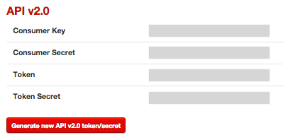
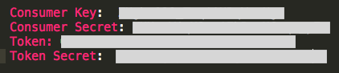
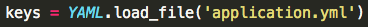
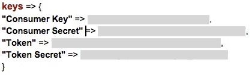
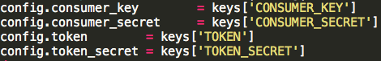
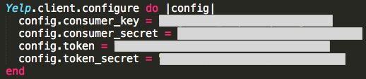

For our project, we’re using a Yelp API to help us find restaurants in a specific neighborhood. To get access to the API we generated keys and tokens from Yelp’s developer website.

These keys and tokens allow us to make a HTTP request to the Yelp API to get the information we want.
To keep these API keys safe, we first stored them in a separate YAML file called application.yml.
Inside application.yml:

And then we can created a .gitignore file that lists our application.yml in it. Doing this allowed us to keep application.yml from being pushed up to GitHub and keep people from getting a hold of our API keys. A .gitignore file contains a list of files that are not to be pushed up to GitHub.
So when we wanted to make a request to our API, we had to first load the file application.yaml.

…which gave us a hash of our API keys and tokens:

…and then we made the actual request to the API by sending over our API keys as key-value pairs from our hash.

However, because we wanted to see if we could just get the API code working, we decided to hardcode the keys in first…

Then an hour or so later….we got the API working and were able to get the information we were looking for from Yelp. Yay! git add. git commit. git push. OOPS. We had just completely exposed our API keys to everyone.
So, how do we resolve this problem? The problem with just fixing our code, hiding our API keys, and then pushing the code back up to GitHub was that all of our previous git commits still contained those keys. So, the best thing to do was to destroy those keys and generate new ones. And not expose them again.
Our case was not too serious, hopefully. However, there have been a number of cases where programmers who used Amazon Web Services (AWS) had mistakenly published their tokens on GitHub and ended up getting their accounts hacked into. One programmer using AWS realized his keys were revealed in his code just five minutes after he commited his files to GitHub. So he immediately reverted his last few commits and deleted all traces of his keys from GitHub. But the next morning he had four emails from Amazon AWS, a missed phone call from them and 140 servers running on his AWS account, along with a bill for $2375. So his keys were discovered within those five minutes they were exposed on GitHub. Luckily, when he explained the situation to Amazon customer support, they dropped the charges.
You can find the full story here: My $2375 Amazon EC2 Mistake.